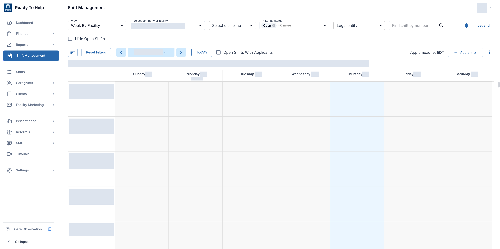
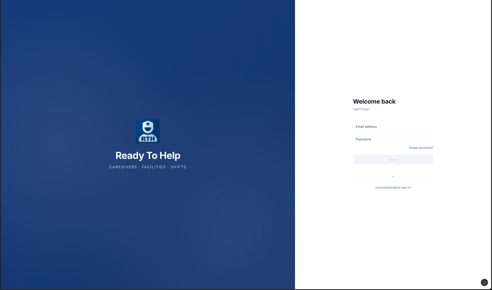

Engineering behind
healthcare staffing.
Contributing to the operational software that connects staffing teams, caregivers, and the work between them.
- My role
- Software Engineer
- Context
- Team contribution · ESA
- Platform
- Web · Mobile · Backend
Inside the product
Many moving parts.
One connected operation.
The staff portal brings daily operations, shift scheduling, and caregiver onboarding into one workspace. These screenshots show the actual application; select any image to view it at full size.

A shared view of shifts needing attention and caregiver onboarding progress.

Weekly scheduling by facility, with filters for discipline, status, and legal entity.

The staff portal entry point, with password and passwordless sign-in options.
Actual application screenshots · Private records and metric values permanently redacted
My contribution
Where I worked
on the system.
- 01
Scheduling & communication
Automated facility-request intake, shift updates, and caregiver notifications across staffing workflows.
- 02
Onboarding workflows
Contributed to document-verification flows, reminders, and staff review processes for caregiver onboarding.
- 03
Payroll & billing
Built TypeScript and PostgreSQL calculation and reconciliation services for payroll and billing reporting.
Engineering focus
The important work
is between the screens.
State changes, integrations, and data consistency connect the user experience to day-to-day operations. This is the kind of engineering I like working on.
TypeScript · React · PostgreSQL · Integrations
Want to talk through the work?
Get in touch for a conversation about my contribution.